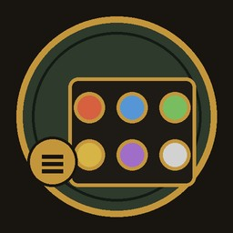

Minimap · WoW: Forever
Button Drawer
One minimap button that holds every addon's minimap button and folds them out on click. Includes a Lua error button.
Addon minimap buttons are taken off the minimap and parked in a drawer behind a single button. Click that button and they fold out in a grid; click it again and they fold back in. The drawer stays open until you close it.
What it does
One button instead of many
Takes every addon button on the minimap: LibDBIcon buttons, buttons with the usual minimap-button names, and any other small clickable button an addon hangs on the minimap, whatever it is called. Blizzard's own minimap controls and map pins are left alone. Opening the drawer looks again, so a button created late is picked up too.
Buttons stay put
When an addon tries to move its button back onto the minimap, Button Drawer puts it back in the drawer.
Built-in Lua error button
The first cell of the drawer is an error button: grey when there are no errors, red with a count when there are. The count also shows as a badge on the drawer button. Errors are deduplicated and kept in a window, one at a time (Previous / Next), with Mark (this one) and Mark All (every error) for one Ctrl+C, Clear and Close. Errors survive a /reload. It replaces the default error popup.
Movable
Drag the drawer button around the minimap; the position is saved.
Manage window
The Set cell in the drawer (or
/bd config) lists every button with On, Up and Down, and sets icon size, columns and opening on mouse-over. No dragging needed.Opens the right way
The drawer folds out away from the nearest screen edges.
Standalone
No libraries, no dependencies.
Pictures


Install
- Download the zip from the latest release, or install it from CurseForge.
- Extract the
ButtonDrawerfolder intoWorld of Warcraft\<Forever folder>\Interface\AddOns\. - Restart the game.